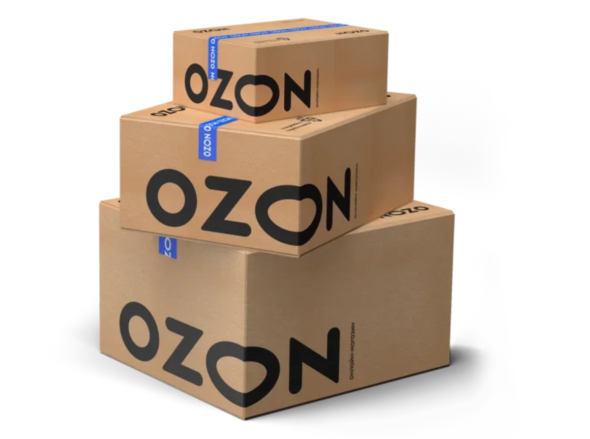

О компании
Ozon («Озо́н») — российский маркетплейс. Основан в 1998 году как интернет-магазин по продаже книг и видеокассет. Помимо торговой площадки, компания развивает экспресс-доставку товаров повседневного спроса Ozon fresh, доставку товаров из-за рубежа Ozon Global, финансовые сервисы от Ozon Банк, а также бронирование авиа и железнодорожных билетов, отелей и туров Ozon Travel. Компания работает в России, Армении, Белоруссии, Казахстане, Китае, Кыргызстане, Турции и Узбекистане.
Решение о создании на паритетных началах полнопрофильного интернет-магазина было принято компаниями-учредителями в конце 1997 года. Магазин основан в 1998 году санкт-петербургской компанией Reksoft и издательством Terra Fantastica как торговый сервис для продажи книг и видеокассет через интернет. Созданию магазина предшествовал запуск в октябре 1997 года интерактивной библиографической базы данных Ad Verbum, на которой были отработаны способы представления информации и структуры баз данных. В начале 1998 года к Ad Verbum была добавлена также функциональность оформления заказа пользователем. Для магазина, который первых своих покупателей нашёл среди выходцев из России, живущих за рубежом, по созвучию с названием взятого за образец интернет-бизнеса Amazon было выбрано название Azon, которое вскоре преобразилось в «Озон», более понятное для пользователей и способное ассоциироваться с «газом жизни», «лёгким газом».
Финансовые показатели и доходы компании Ozon
В феврале 2016 года журнал Forbes оценил стоимость компании в 680 млн $. В 2018 году компания показала самый большой рост продаж за 10 лет существования. По информации самой компании, оборот интернет-магазина вырос на 73 % до 42,5 млрд руб. с НДС. В 2019 году Ozon занял пятую позицию в рейтинге журнала Forbes «20 самых дорогих компаний Рунета-2019», а стоимость компании оценили в 694 млн $. В 2020 году занял шестое место в списке самых дорогих компаний российского сегмента сети Интернет по версии Forbes.
- Более 20 лет магазин остаётся убыточным, то есть не приносит прибыли. Операционные расходы покрываются за счёт денег инвесторов.
- Оборот компании за 2019 год составил 80,8 млрд р., за 2020 год — 197,4 млрд р., за 2021 год — 448,3 млрд рублей, за 2022 год — 832,2 млрд рублей.
- Убыток за 2022 год достиг рекордных 58 млрд рублей. 10,2 млрд рублей — ущерб от пожара на подмосковном складе в августе 2022 года.
Депозитарные расписки на акции Ozon Holdings PLC, размещённые в 2020 году, котировались на бирже NASDAQ и Московской бирже (входит в Индекс МосБиржи). По данным Bloomberg на 24 ноября 2020 года, рыночная капитализация Ozon достигла 7,2 млрд $ (около 546 млрд ₽). В 2022 NASDAQ приостановила торги ADS Ozon, а весной 2023 заявила о принудительном делистинге. После двух неудачных попыток обжаловать делистинг, в октябре 2023 года Ozon объявил о добровольном делистинге с NASDAQ.
Оформление и использование карты OZON банк
Оформление карты
Для оформления онлайн-карты банка OZON, вы можете:
- В мобильном приложении OZON. Заказать банковскую карту можно в разделе «Мои финансы».
- На сайте finance.ozon.ru. В специальной форме указывается номер телефона, адрес электронной почты и кодовое слово, которое нужно будет сообщать, обращаясь в службу поддержки.
Использование карты
Картой банка OZON можно оплачивать покупки в разных магазинах:
- В интернет-магазине OZON. Карта будет привязана к личному кабинету.
- В других интернет-магазинах. Реквизиты карты можно посмотреть в личном кабинете.
- Также картой OZON можно рассчитаться в офлайн-магазинах. Для этого необязательно заказывать пластик.
Пополнение счёта
Счёт можно пополнить:
- через Систему быстрых платежей, отправив деньги по номеру телефона;
- переводом с другой банковской карты.
Условия использования
Обслуживание и любые операции с банковской картой бесплатны.
Преимущества
Пользователи карты банка OZON получают доступ к следующим преимуществам:
- Получать кешбэк до 25% на три любые категории товаров и услуг.
- Покупать товары в интернет-магазине OZON по специальной цене.
Подробнее о лимитах и условиях использования можно узнать в справке на сайте.
Для оформления карты и получения дополнительной информации, посетите сайт банка OZON.